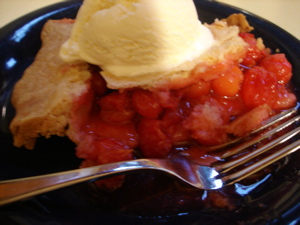

Special cherry pie
I know I’ve posted about cherry pie before on this blog, but this cherry pie is special; Nick Malgieri calls it Once-A-Year Cherry Pie, because the season for pie cherries is so fleeting. This is also possibly the most labor-intensive pie I’ve ever made, comparable to hand-sewing sequins or seed pearls on a wedding gown. If you’ve never pitted pie cherries before, there is no really efficient way to do it that I know of. They are softer than sweet cherries, and manual cherry pitters don’t work well on them, although I tried to use mine all it did was sort of squash each cherry, or tear a hole in it so I could rip the pit out of it with my fingernail. Mr. Malgieri recommends simply slashing each cherry with a small paring knife and squeezing to extract the pit. But at the same time you have to make sure to catch the juice so you can use it in the filling, so the whole thing is rather awkward, as you balance two or three bowls on your lap with cherry juice running down your arms. Pie cherries are small, too, so pitting two quarts of them takes a long time. The only thing I changed in the recipe is that I eliminated cinnamon and almond extract and substituted vanilla, as I don’t like almond flavor in my cherry pie. Of course I used the Watkins vanilla.
Once-A-Year Cherry Pie from How to Bake by Nick Malgieri

- pastry for 2 crust 10 inch pie
- 2 quarts sour pie cherries (sweet cherries do not work for pie)
- 1 cup sugar
- 3 tablespoons cornstarch
- 3 tablespoons water
- 1 teaspoon vanilla
- 2 tablespoons butter
- pinch salt
- Prepare and chill the pie dough.
- To make the filling, pit the cherries over a bowl; slash the side of each one with a small paring knife and squeeze gently to extract the pits. Put the cherries in the bowl as they are pitted.
- When all the cherries have been pitted, drain the juices from the bowl into a nonreactive saucepan and add 1 cup of the cherries and the sugar. Bring to a simmer over low heat, stirring occasionally, until the sugar is melted and the mixture is very liquid, about 5 minutes.
- Combine the cornstarch and water in a small bowl and whisk the cherry and sugar mixture into it. Return to the pan and cook, stirring constantly, over low heat, until it comes to a boil, thickens, and becomes clear, continue to cook over low heat for and additional few minutes until it does. Pour into a large bowl and stir in the remaining filling ingredients, except the cherries, then add the remaining cherries.
- Roll out bottom crust and arrange in pie pan, pour filling into crust. Cover with plain or lattice-top crust and flute edge. Sprinkle top with sugar if you wish.
- Place pie in 375º oven and bake for 50 minutes or until top is golden brown and filling is bubbling. Cool before serving.
Comments
I am so glad to hear that you, too, have no easy solution to pitting these cherries! I have always thought that there must be an easier way, but could not come up with one either. Alas, I suppose we are destined to have black thumbs from manually pitting the cherries for pie each June! (A good time to wear nail polish… after the cherries are pitted, of course!) Your description of the cherry juice running down arms is hilariously acurate.
And why do cherries and strawberries have to come ripe right when school is ending and my calandar is so full?! Oh well, I always manage to make time for a cherry pie and strawberry-picking and jam making. Tradition!!
I love cherry pie, it may even be my favorite kind of pie. Cherries have the perfect flavor and texture. I’m getting hungry just thinking about it! I hope it was worth all the work, it looks like it was.
That was a lot of cherries to pit by hand. Yikes! You are a dedicated cherry pie maker. I hope your family was suitably grateful for your efforts.
Do not worry we were all very grateful for the cherry pie, it was amazing! (I think I can safely speak for all 7 of us who were at the table that night.) It even sparked a heated debate about whether it was “wrong” to eat ice cream with it, because it would actually detract from the superb taste.
I have enough cheries, pitted and sugared to make 3 pies. Just sit on your porch and pit them and listen to the birds, throw the pits over the deck railing, sprinkle a little clorox on your fingers and you are home free. Interesting that you simmer half the cherries first. I’ve never done that. We will have one of the pies when you arrive and we can compare notes. Sort of like simmering the strawberries for the shortcake.
I am a cherry pie lover myself and over the past couple of years have gone to a local orchard to pick both sweet and sour cherries. While I have a great recipe for a bing cherry pie with a little orange juice and cinnamon sour cherry pie is by far my favorite. CHERRY PITTING TIP – I have never used a cherry pitter but found a tip out on the internet that has worked great for me – a PAPERCLIP. Unbend the outside turn of a small paperclip. Insert the still curved end into the cherry where the stem was attached, angle and slip the pit out. Works like a charm. Hardly any mess and the cherries maintain their shape and lose less juice.
Hi, Dawn—I have tried bing cherries in a couple of different recipes but never found one I liked. How do you like yours with the orange juice? When you say a local orchard, local to where?? New York or Pittsburgh? And thanks for the paper clip tip; I will definitely try it!
I also used the paper clip idea – I was definitely skeptical, but it was great! My 87 year old grandmother was also amazed at using a paper clip.
The pie recipe is delicious! I love the tart cherries, but then sauce/syrup that is made creates a sweetness like having canned cherries.
Thanks!
2qt cherries to 1C sugar?!! I dunno… sounds awfully tart.
Re: PAPERCLIPS, that is the method I use, but the oldest trick is to use a hairpin, the old-fashioned u-shaped kind. I thought everyone’s grandma knew that one! Ah, well, maybe a few generations ago… And then again these days paperclips are much easier to come by than hairpins.
If your cherries are clean and don’t need to be trimmed or picked over, it goes pretty fast. I put a low stool between my knees, and set a basin of cherries on the right, an empty basin on the left to catch pitted ones, and a little bucket on the floor to catch pits. I prefer the TV since there are no mosquitoes but the back porch with the robins singing and the cicadas buzzing sounds mighty nice!
Add a comment